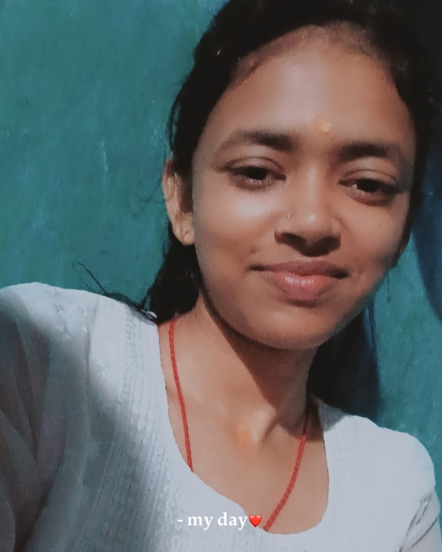

 |
Anisha Gupta
A Student of Diploma Engineering.
Second year Diploma Student in Computer Science Engineering with strong
interest in Artificial intelligence, Software Development, Web Technology.
Skilled in Python, C Language, PHP, MYSQL, Web development.
|
EDUCATION
| Course |
University |
Year |
Result |
| Diploma in CSE |
GP GAYA |
2026 |
8.9 CGPA |
| Anugrah +2 High School |
GAYA |
2025 |
88% |
WORK EXPERIENCE
.Internship On Python
From Tutedude
- Python Programming: Learned the basics of Python, such as variables, functions, loops, data structures, file handling, and error handling.
- Practical Projects: Used Python to work on real-world tasks like web scraping, automation, and backend development, which improved programming and problem-solving skills.
PROJECTS
E-COMMERCE Website
- Developed an online shopping website where users can browse products and view product details.
- Implemented a user-friendly interface with features for managing products and basic shopping functionality.
Personal Portfolio Website
- Created a responsive portfolio website to showcase my skills, projects, education, and achievements.
- Designed a clean and simple interface to present my profile and project work professionally.
ACHIEVEMENTS
2nd rank in Diploma Computer Science Engineering First Semester
Government Polytechnic Gaya
Jan 2026
3rd rank in Diploma Computer Science Engineering Second Semester
Government Polytechnic Gaya
Jan 2026
SKILLS
- C Language
- Python
- Web Development
- PHP
- MYSQL
- HTML
- CSS
- JAVA Script
LANGUAGE
English
Limited Working Proficiency
Hindi
Native or Bilingual Proficiency
INTERESTS
- Artificial intelligence
- Software Development
- Web Technology
- Learning New Skills
- Android Developed
- Singing
Contact Info.
Email:anishagupta9006cse@gmail.com
GitHub:https://github.com/anishagupta9006cse-cloud
Linkein:www.linkedin.com/in/anisha-gupta2026